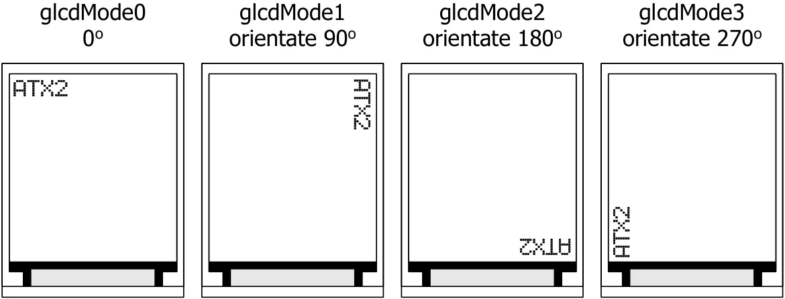

5.3.10 glcdMode
It is for setting the display orientation. There are 4 modes; 0 (0 degree), 1 (orientate right 90 degrees), 2 (orientate 180 degrees or invert) and 3 (orientate 270 degrees from origin)
Syntax
glcdMode(unsigned int modeset)Parameter
modeset - Orientation mode number. It is 0 to 3 for determine 0, 90, 180 and 270 degrees orientation. The default is 0 degree in vertical.

Example 5-12
#include <ATX2.h>
void setup()
{
setTextSize(2); // Set text size as 2x
}
void loop()
{
glcdClear(); // Clear screen
glcdMode(0); // Set display orientation mode 0
glcd(0,0,"ATX2"); // Show message
sw_ok_press(); // Wait OK switch pressing
glcdClear();
glcdMode(1); // Set display orientation mode 1
glcd(0,0,"ATX2");
sw_ok_press();
glcdClear();
glcdMode(2); // Set display orientation mode 2
glcd(0,0,"ATX2");
sw_ok_press();
glcdClear();
glcdMode(3); // Set display orientation mode 3
glcd(0,0,"ATX2");
sw_ok_press();
}Original manual, page 84